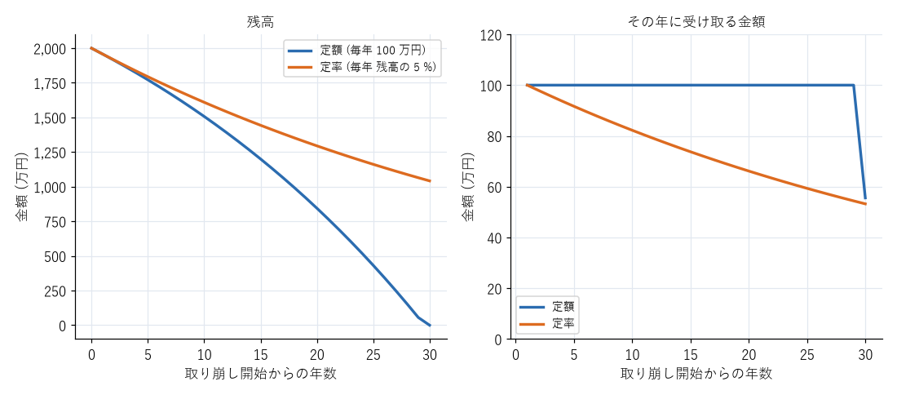

13. 続け方と出口
長期投資で最も難しいのは、始めることよりも続けることである。本章では、相場が大きく下がったときの考え方、生活の変化への対応、資産を取り崩す時期の考え方、相続の基礎を説明する。
13.1. 暴落時の行動
投資を続けていれば、いつか必ず資産が大きく減る時期が来る。そのときに取るべき行動は、原則として「何もしない」ことである。
売らない：下落時に売却すると、損失が確定する。過去の暴落では、その後に市場が回復しており、売ってしまった人は回復の恩恵を受けられなかった。
積立を止めない：積立を続けていれば、価格が安いときに多くの口数を買うことになる。価格が回復したときには、その分の効果が得られる。
資産配分を確認する：株式が大きく下がると、資産全体に占める株式の割合が減る。計画した配分から大きくずれた場合は、リバランスを行う。
暴落時に不安になるのは自然なことである。不安で投資を続けられない場合は、相場が落ち着いた後に、リスク資産の割合を減らすことを検討する。それは、第 6 章で説明したリスク許容度を、実際の経験を通じて知ったということである。
暴落時の不安に備えるには、平常時に次のことをしておくとよい。
自分の資産配分で、暴落時にどれだけ資産が減るかを計算しておく（第 8 章）。
生活防衛資金を確保しておく。急な出費があっても、下落したリスク資産を売らずに済む。
自分がなぜこの方針で投資しているかを、メモに書き残しておく。
13.2. 見直しのタイミング
投資の方針は、頻繁に変える必要はない。見直すのは次のような場合である。
タイミング |
確認する内容 |
|---|---|
年に 1 回 |
資産配分のずれ、積立額が家計に合っているか |
結婚・出産 |
生活防衛資金の額、教育費の準備、保険の見直し |
転職・退職 |
企業型 DC の資産の移換、iDeCo の掛金の上限、収入の変化に応じた積立額 |
住宅の購入 |
頭金に使う資金の確保、住宅ローンの返済と積立の両立 |
定年が近づいたとき |
資産配分（リスク資産の割合）、取り崩しの計画、iDeCo の受け取り方 |
住宅の頭金や教育費のように使う時期が決まっているお金は、使う時期の 5 年ほど前から、少しずつ無リスク資産に移していくと、直前の暴落で予定が狂うことを防げる。
13.3. 取り崩しの考え方
老後など、資産を使う時期が来たら、資産を少しずつ取り崩して生活費に充てる。資産を一度にすべて売却する必要はない。残りの資産は運用を続けながら、必要な分だけ売却するのが基本である。
取り崩しの方法には、主に次の 2 つがある。
方法 |
長所 |
短所 |
|---|---|---|
定額方式（毎年同じ金額を引き出す） |
受け取る額が一定で、生活の計画を立てやすい |
運用成果が悪いと、資産が早く尽きることがある |
定率方式（毎年、残高の一定割合を引き出す） |
資産が尽きにくい |
受け取る額が年によって変わり、相場が悪いと大きく減る |
図 13.1 は、2,000 万円の資産を年 3 % で運用しながら、定額方式（毎年 100 万円）と定率方式（毎年残高の 5 %）で取り崩した場合の比較である。定額方式では 29 年目までは毎年 100 万円を受け取れるが、30 年目に資産が尽きる。定率方式では、30 年後も約 1,040 万円の資産が残るが、受け取る額は年々減り、30 年目には約 53 万円になる。

図 13.1 定額方式と定率方式の取り崩しの比較（2,000 万円を年 3 % で運用した場合）
実際には、最初は定率方式で資産を長持ちさせ、高齢になってから定額方式に切り替える、といった組み合わせも考えられる。
米国では、引退後に資産の 4 % を毎年取り崩せば、30 年間資産が尽きる可能性は低いという研究（いわゆる「4 % ルール」）が知られている。ただし、これは過去の米国の市場のデータに基づく研究であり、日本で、将来も同じ結果になるとは限らない。目安の 1 つと考える。
取り崩しの計画を立てるときは、公的年金の受給額を土台にし、不足する分を資産の取り崩しで補うと考える。公的年金は、受給開始を 66 歳以降に遅らせる（繰下げ受給）と、1 か月あたり 0.7 % 増額される（75 歳まで遅らせると 84 % 増）。働ける間は働き、その間は資産を取り崩さずに年金の受給開始を遅らせることも、老後の資金を長持ちさせる方法の 1 つである。
取り崩しの試算は、付録のサンプルコードで紹介するスクリプトで、条件を変えて試すことができる。
13.4. 相続の基礎
投資した資産を持ったまま亡くなった場合、その資産は相続財産になる。
課税口座で保有している株式や投資信託は、相続人の口座に移すことができる。
NISA の口座で保有している資産は、相続人の NISA の口座には移せない。相続時の価格で、相続人の課税口座に移される。
iDeCo や企業型 DC の資産は、遺族が死亡一時金として受け取る。
家族が、どの金融機関に口座があるかを把握できるように、金融機関名や口座の種類を記録しておくとよい。ネット証券では郵送物がほとんど届かないため、家族が口座の存在に気付かないことがある。
13.5. まとめ
暴落時は、売らず、積立を止めず、資産配分を確認する。
生活の大きな変化があったときに、投資の方針を見直す。
使う時期が近いお金は、少しずつ無リスク資産に移していく。
取り崩しには定額方式と定率方式があり、それぞれ長所と短所がある。公的年金を土台にして計画する。
家族のために、金融機関や口座の情報を記録しておく。